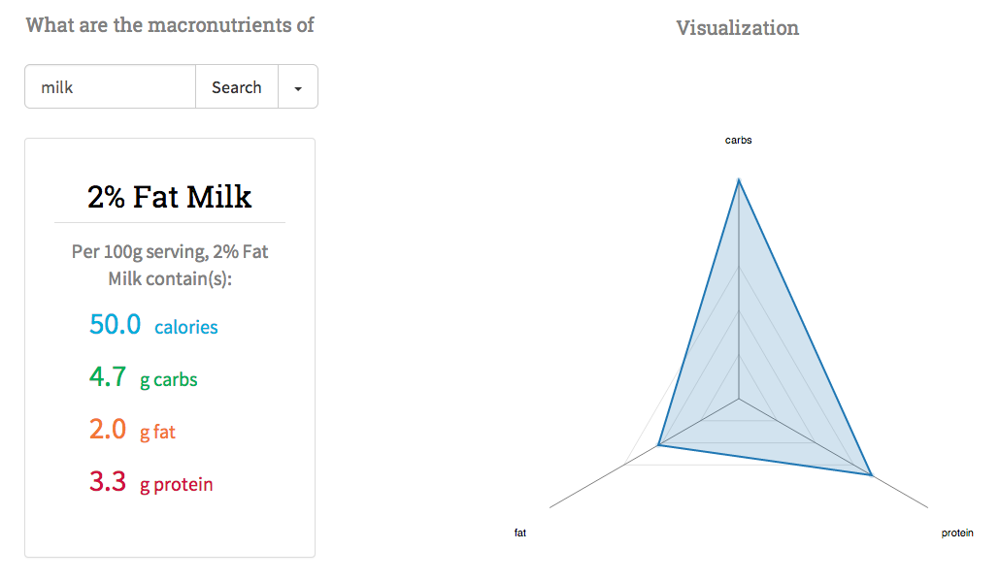

Macronutrient search
Macronutrients on heroku
Macronutrients repo
I like to keep track of what I eat, but I hate most online nutrition apps. They're filled with ads and usually give me way more information than I actually need. So I decided to make my own.

Macronutrient search does what it advertises: it returns the macronutrients of a food only. Food "macros" include calorie count, carbohydrates, fat, and protein. You know, the things you actually pay attention to on a nutrition label.
It's powered by the FatSecret API which provides a solid nutritional database. Ibrahim Muhammad wrote a nice ruby gem for the API. The app is optimized with database caching; the results of each user query are written to a database by a background job to avoid repeat API requests. Note that background jobs are disabled in the heroku deployed version of the app.
Roy Lee, Patrick Vilhena, and Eli Shkurkin recently helped me redesign the frontend with the D3.js library. The macronutrients for each results are now visualized in a radar graph.
Cluny preambles database
Cluny database repo
arenga_types.txt
In my free time I maintain a SQLite database of preambles (also known as "arengae") from the Cartularies of Cluny, 987 to 997.
Historians are interested in preambles because they are highly rhetorical, and therefore offer us a window into the ideology advanced by a monastery. The database has one table with the following schema:

charter_num refers to the categorization of charters found in Bernard & Bruel, "Recueil des chartes de l'abbaye de Cluny", Paris 1876-1903.
This database is free for anyone to play around with, if medieval history is your thing. "arenga_types.txt" is a guide to the arenga categories found in the database.